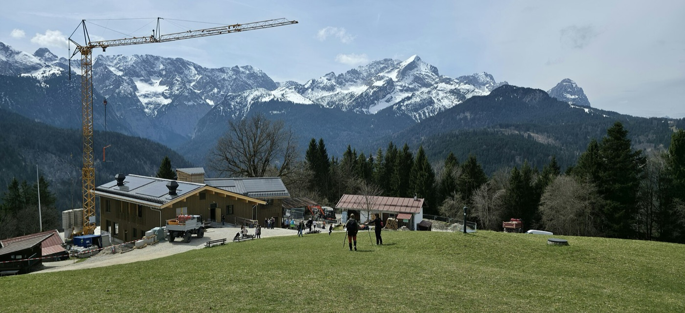
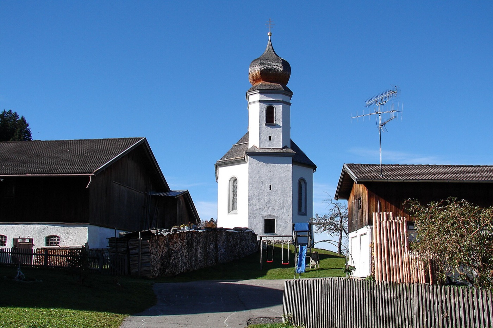
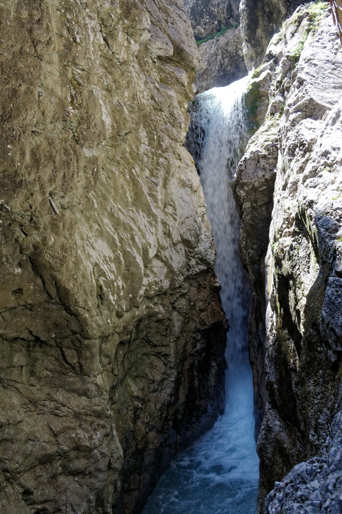
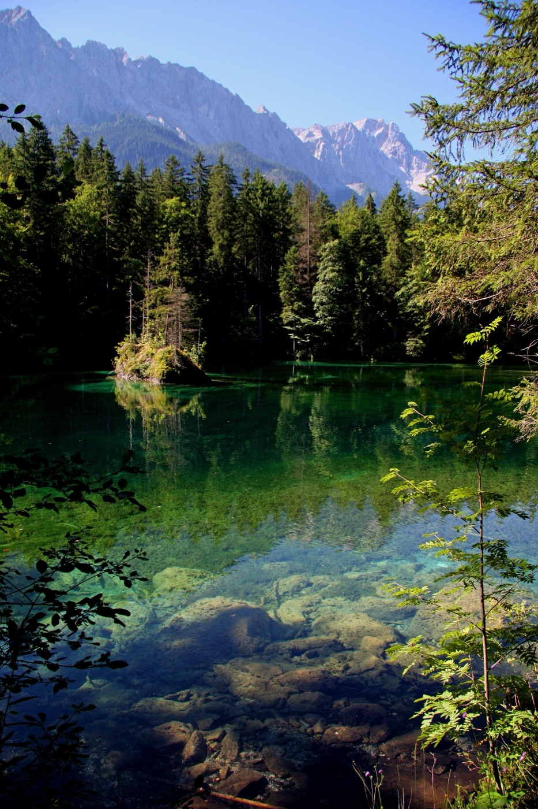
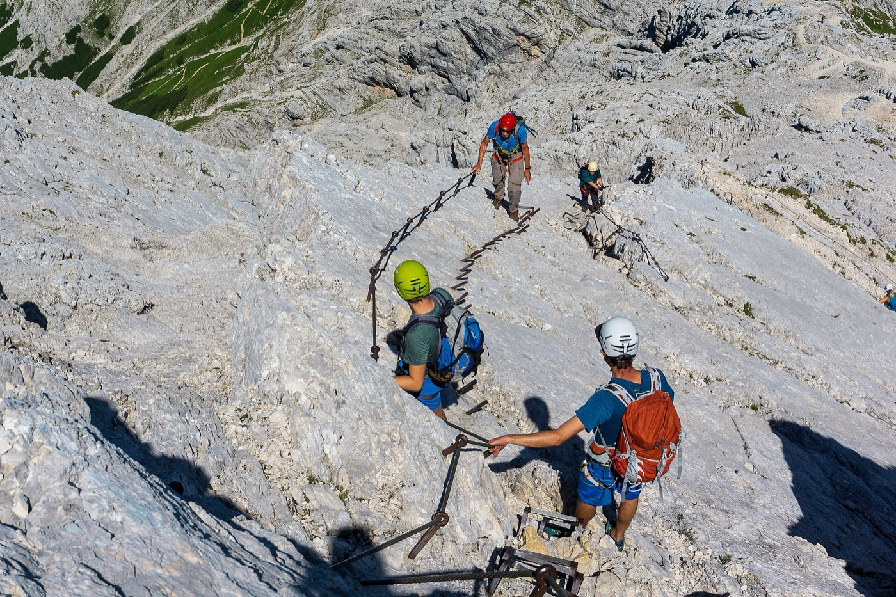
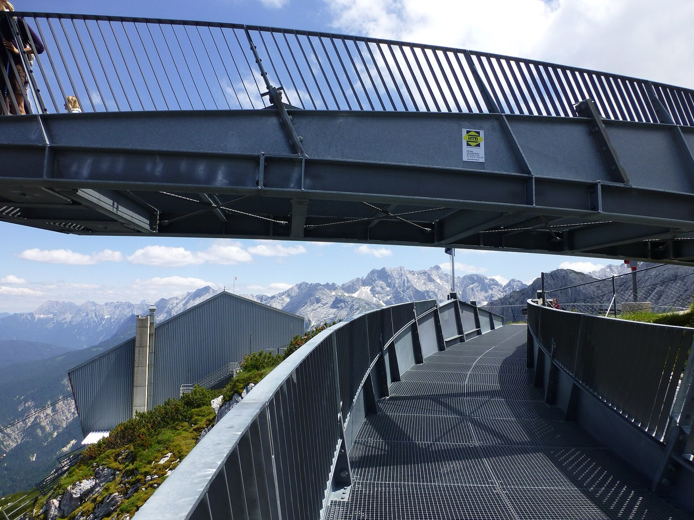
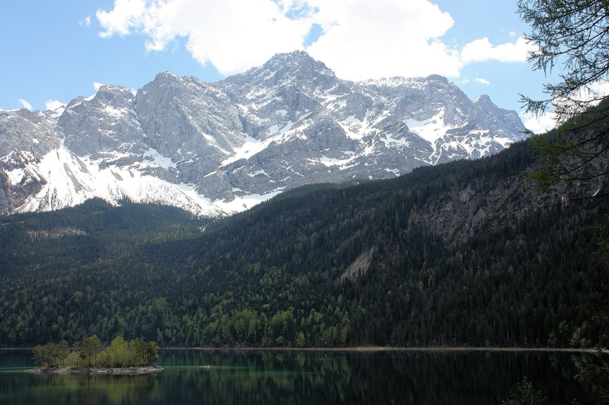
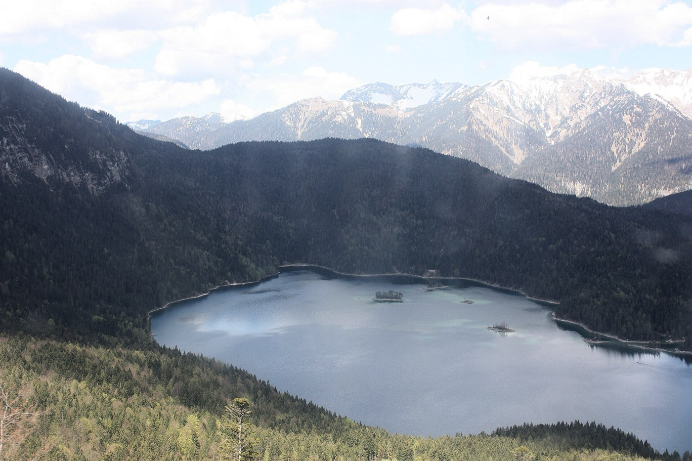

Garmisch-Partenkirchen
Četras dienas Bavārijas Alpos: Eckbauer, Partnachklamm, Höllentalklamm, Alpspitz-Ferrata un Zugspitze.
Eckbauer un Partnachklamm
Vācijas vienības diena - valsts svētki, veikali Garmišā ciet. Dienā kopā ~16 km kājām (↑ ~580 m): kores aplis 10,1 km + Partnachklamm 6,1 km; uz pacēlāju un atpakaļ mājās ar taksi.



No Eckbauer pa kori uz Wamberg un atpakaļ, lejā ar Eckbauerbahn. Īsāk: tikai kafija un skats Eckbauer
Kilometri
| Mājas → Eckbauerbahn | taksis ~5 min · (kājām 2,5 km) |
| Kores aplis Eckbauer → Wamberg → Eckbauer | 10,1 km · ↑ 380 m · ~2:45 h |
| Eckbauerbahn lejā | pacēlājs · ~12 min |
| Stadions → Partnachklamm → stadions | 6,1 km · ↑ 200 m · ~1:30 h |
| Stadions → mājas | taksis ~5 min |
| Kopā kājām | ~16 km · ↑ ~580 m · ~4:15 h |
Dienas gaita
- Izlidojam RIX → MUC 08:15 (airBaltic BT221)
- Pārtika Se-Sv (Garmišā veikali ciet līdz pirmdienai). Lidostā: EDEKA Munich Airport Center, Terminalstraße, virs S-Bahn stacijas, katru dienu 5:30-20:00 (svētku laiks nav apstiprināts). karte ↗
- S1 no lidostas → München Hbf 10:15. Ja lidostā neiepirkāmies: EDEKA Ernst Hbf, S-Bahn pārsēšanās līmenī zem Arnulfstraße (Arnulfstr. 2), svētkos 8:00-23:00. karte ↗ - 13 min līdz RB6
- RB6 München Hbf → Garmisch-Partenkirchen 11:55. Biļetes MVV lietotnē
- Bagāža uz māju (15 min kājām no stacijas, Mikail atļāva atstāt)
- Taksis (~5 min) vai kājām (~30 min) līdz Eckbauerbahn pie Olimpiskā stadiona. Ar Gästekarti 1 brauciens bez maksas, otrs 16,50 €
- Augšā Eckbauer, ātras pusdienas Berggasthof Eckbauer (līdz 16:30)
- Kores aplis uz Wamberg un atpakaļ (~2:45 h). Pēdējais pacēlājs lejā 17:00
- Lejā ar Eckbauerbahn → 20 min kājām līdz Partnachklamm kasei. Pēc 15:30 mazāk cilvēku. Biļete 10 € online (QR) vai 9 € kasē ar Gästekarti. biļetes ↗
- Aiza turp un atpakaļ (~45 min). Ceļš aiz aizas uz Vordergraseck slēgts līdz 20.11. - atpakaļ pa to pašu
- Taksis uz mājām (~5 min). Ievākšanās līdz 23:00 (atslēgu kastīte - kods Airbnb lietotnē)
Biļetes šai dienai
- Vilciens lidosta → GarmischMVV lietotne, Gruppen-Tageskarte
- Eckbauerbahnaugšā ar Gästekarti bez maksas, lejā 16,50 € - kasē
- Partnachklamm10 € online (QR) vai 9 € kasē
Gasthaus zur Schranne
Griesstraße 4 · ~23 min kājām · veģetārā sadaļa ēdienkartē
Rezervēts 8 pers.
Höllentalklamm
Aiza ar ūdenskritumiem un tuneļiem. Pēcpusdienā kalnos iespējamas lietusgāzes - sākam agri un lejā esam līdz ~15:00.


Caur aizu līdz Höllentalangerhütte, atpakaļ pa Stangensteig un piekaramo tiltu (DAV maršruts). Vajag drošu soli
Kilometri
| Mājas → Zugspitzbahnhof | kājām ~15 min |
| Garmisch → Hammersbach | Zugspitzbahn · 12 min |
| Garais: aiza → Höllentalangerhütte → Stangensteig | 11 km · ↑ 890 m · ~4:30 h |
| vai īsais: aiza turp un atpakaļ | 8,8 km · ↑ 500 m · ~3:30 h |
| Hammersbach → Badersee → Grainau | 3,6 km · līdzens · ~1 h |
| Grainau → Garmisch → mājas | Zugspitzbahn 20 min + kājām ~15 min |
| Kopā kājām (garais / īsais) | 14,6 / 12,4 km · ↑ 890 / 500 m · ~5:30 / 4:30 h |
Dienas gaita
- Zugspitzbahn vilciens no Garmisch (Zugspitzbahnhof blakus DB stacijai) → Hammersbach. Pieprasījuma pietura - pasaki vadītājam. 4,80 €, Gästekarte neder
- Höllentaleingangshütte pie aizas ieejas (no 9:00, tikai skaidrā). Ieeja aizā 7 €, skaidrā
- Aiza → Höllentalangerhütte. Būda jau ciet - uzkodas līdzi
- Atpakaļ Hammersbach → kājām uz Badersee (zils maršruts "Papildus")
- Badersee: tirkīza avotu ezers, apkārt ~20 min. Ezerā 5 m dziļumā bronzas nāra (Nixe) pie klinšu saliņas - redzama no laivas. Viesnīcā Das Badersee: kafija un mājas kūkas Tagesbar Bergstation (katru dienu 13:30-17:00), uzkodas Restaurant Werdenfels (12:00-18:00) ar skatu uz ezeru un Zugspitze. Airu laiva "Lola" - pieejama arī ārējiem viesiem, ja ūdens līmenis atļauj, jautāt reģistratūrā. Atpakaļ: ~10 min kājām līdz Grainau stacijai un vilciens uz Garmisch. karte ↗
Biļetes šai dienai
- Zugspitzbahn Garmisch → Hammersbach, atpakaļ no Grainau9,60 € turp-atpakaļ - stacijā, Gästekarte neder
- Höllentalklamm7 € - tikai skaidrā
Zum Wildschütz
Bankgasse 9 · ~20 min kājām · veģetāri: Kasspätzn, Kaiserschmarrn
Pieprasīts, gaidām apstiprinājumu (+5 cūkas stilbi)
Alpspitz-Ferrata un Wank
Kāpj 6 cilvēki, pārējie divi pievienojas 16:10 pie Wankbahn. Pēc ferratas - Wank panorāma un, ja laiks atļauj, kājām lejā līdz mājām.


Alpspitz-Ferrata (A/B) līdz virsotnei 2628 m, lejā pa Nordwandsteig uz augšstaciju
Kilometri
| Ferrata loks | 3,7 km · ↑ 670 m · 5-6 h |
| Alpspitzbahn lejā → WN alpin → Wankbahn | taksis |
| Wank → Eckenhütte → Tannenhütte → mājas | 5,9 km · ↓ 1040 m · ~2:30 h |
| Kopā kājām | ~9,6 km · ↑ 670 · ↓ ~1700 m · ~8 h |
Dienas gaita
- Izejam no mājām
- WN alpin, Zugspitzstraße 20 - ekipējums (ķivere, iekare, ferratas komplekts) 30 € skaidrā, drošības naudas un atcelšanas maksas nav. Darba laiks P-Pk 9:00-12:30 un 14:00-18:00. Cimdi savi
- Kreuzeck-/Alpspitzbahn → Osterfelderkopf 2033 m. Biļete online ar Gästekarti ~27 € (bez tās 39 €). Vilciens no Garmisch 3 € vai taksis
- AlpspiX skatu platforma tieši pie augšstacijas - 5 min, bez maksas. Divas tērauda "rokas" virs 1000 m dziļuma
- Ferrata. Maršrutā un virsotnē nekā nav - ūdens 1 l + uzkodas. No rīta iespējama salna, cimdi obligāti
- Ferrata pabeigta, Osterfelder 2000 (līdz 16:00). Pagrieziena punkts: ja esam vēlāk - plāns B zemāk
- Alpspitzbahn lejā → taksis līdz WN alpin, ekipējumu atdodam (WN alpin P-Pk 9:00-12:30 un 14:00-18:00)
- Taksis līdz Wankbahn (Partenkirchen) → augšā 18 min, 19,50 € vienā virzienā. Pēdējais augšā 16:30. Abi nekāpēji var pievienoties šeit
- Wank panorāma → kājām lejā caur Eckenhütte un Tannenhütte (P ciet) uz mājām, ~1000 m lejup. Telefona lukturis (uzlādēts telefons, powerbank) - saule riet 18:48, krēsla līdz 19:18. Ūdens un uzkodas līdzi
- Mājās → 19:45 pāri Ludwigstraße (gleznotās fasādes) → 20:00 Renzo pie Rathausplatz
- Ja ferrata beidzas vēlāk: Wank tikai ar pacēlāju (augšā līdz 16:30, lejā līdz 17:00) vai Kreuzeck kājām (~1 h) + Kreuzeckbahn. Ekipējums WN alpin līdz 18:00, vakarā pastaiga pa Ludwigstraße → Renzo 20:00
Biļetes šai dienai
- Ferratas ekipējums30 € skaidrā WN alpin (tikai kāpējiem)
- Alpspitzbahn~27 € online ar Gästekarti (tikai kāpējiem)
- Uz Kreuzeck-/Alpspitzbahntaksis vai Zugspitzbahn 3 €
- Wankbahn augšā19,50 € - kasē
Ristorante Renzo
Rathausplatz 6 · 2-3 min kājām · picas no malkas krāsns, daudz veģetāru
Pieprasīts 20:00, gaidām apstiprinājumu
Zugspitze un Eibsee
Skaidrākā diena prognozē. Augšā ar pacēlāju, lejā pastaiga gar Eibsee, vakarā mājās.


Kilometri
| Mājas → Zugspitzbahnhof | kājām ~15 min |
| Garmisch → Eibsee | Zugspitzbahn · 30 min |
| Eibsee → Zugspitze | Seilbahn · 10 min |
| Zugspitze → Zugspitzplatt | Gletscherbahn · 4 min |
| Zugspitzplatt → Eibsee | zobratu vilciens · 45 min |
| Garais: Eibsee loks → Badersee → Grainau | 11 km · ↓ 250 m · ~3 h |
| vai īsais: Eibsee loks | 7 km · līdzens · ~2 h |
| Eibsee / Grainau → Garmisch | Zugspitzbahn · 35 / 20 min |
| Garmisch → lidosta | RB6 + S1 vai S8 · 2:10-2:20 h |
| Kopā kājām (garais / īsais) | 11 / 7 km · ↓ 250 m / līdzens · ~3 / 2 h |
Dienas gaita
- Izrakstāmies. Bagāža stacijas skapīšos (tikai monētas, 3 €/5 €) vai šaletē
- Zugspitzbahn vilciens Garmisch → Eibsee 08:45
- Seilbahn uz Zugspitze 2962 m (10 min) - rītā skaidrāks, mazāk cilvēku
- Gletscherbahn lejā uz Zugspitzplatt - ledājs (4 min)
- Zobratu vilciens Zugspitzplatt → Eibsee 11:15 (caur kalnu tuneli). Rezerve: 11:30 → 12:15
- Eibsee pastaiga: īsais loks 7 km → vilciens 13:15 → Garmisch 13:50; garais līdz Grainau 11 km → vilciens uz Garmisch ~14:50
- RB6 Garmisch → Hbf → S1 → lidosta 16:28. Ar garo variantu - 15:07 → lidosta 17:15
- MUC → RIX 23:05 (airBaltic BT224)
Biļetes šai dienai
- Zugspitze78 € online - sedz augšā ar Seilbahn un lejā ar Gletscherbahn + zobratu vilcienu
- Vilciens Garmisch → lidostaMVV lietotne
Vēl jāizdara
- Airbnb online check-inPk 2.10.
Saite atnāks automātiski. Vajag visu 8 cilvēku datus - no tiem Mikail taisa Gästekartes.
- Alpspitzbahn biļetes - tikai ferratai (6 cilvēki)Se rītā
Kad Mikail atsūtīs digitālās Gästekartes - pirkt online ar kartes numuru (−30 %, ~27 € 39 € vietā).
- Partnachklamm biļetesLīdz Se
10 € katram, online ar QR kodu - svētku sestdienā bez rindas (kasē ar Gästekarti 9 €).
- Vilciens lidosta → GarmischSe
MVV lietotnē, Gruppen-Tageskarte (1 biļete = līdz 5 cilvēkiem).
- Pieteikt taksi (8 vietu busiņš)Līdz Pk
GA-PA RIDE: Se 12:40 uz Eckbauerbahn un ~18:00 no Partnachklamm; P ~15:30 Kreuzeck → WN alpin → Wankbahn.
- Pārbaudīt laika prognoziPk
No tās atkarīgs, vai P ejam ferratu un O braucam uz Zugspitze. Ja P līst - ferratu neiet.
Boutique ChaletS Alpi
- Am Lyzeum 3, 82467 Garmisch-Partenkirchen
- Ievākšanās Se 16:00-23:00, atslēgu kastīte (kods Airbnb lietotnē)
- Izrakstīšanās Ot līdz 11:00 · bagāžu var atstāt
- Pirts un kino istaba
Līdzi
- Skaidra nauda (ferrata, aiza, būdas)
- Monētas 1 € un 2 € - stacijas skapīšiem
- Cimdi ferratai
- Telefona lukturis un uzlādēta baterija / powerbank (pirmdien lejā no Wank krēslā)
- Cepure un silts slānis - kalnos no rīta ~0 °C
- Ūdens 1 l un uzkodas katru dienu
- Lietotnes: MVV, bergfex vai Outdooractive (kartes bez interneta)
Takas kartē
- Šī lapa: kartē poga ◎ rāda, kur tu esi uz maršruta; slāņos - satelīts un marķētās takas
- Alpenvereinaktiv (DAV, bez maksas) vai Mapy.com - lejupielādē reģiona karti bez interneta un ielādē GPX no dienas pogas "GPX"
- Kalnos internets var pazust - karti lejupielādē jau mājās
Kontakti
- Taksis GA-PA RIDE - arī 8 vietu busiņšWhatsApp vai zvans, vēlams iepriekš · lietotnē: FREENOW (Garmišas taksometri)+49 176 45600900 · karte
- WN alpin (ferratas ekipējums)Zugspitzstraße 20 · P-Pk 9:00-12:30 un 14:00-18:00+49 8821 50340 · karte
- Gasthaus zur SchranneGriesstraße 4+49 8821 9098030 · karte
- Zum WildschützBankgasse 9+49 8821 3290 · karte
- Ristorante RenzoRathausplatz 6+49 8821 4171 · karte